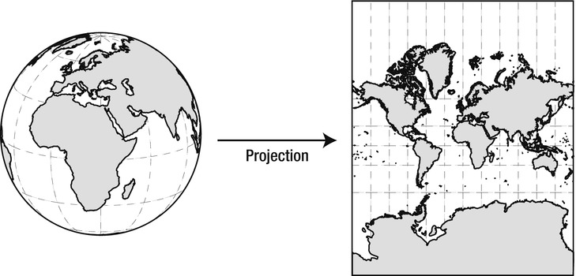
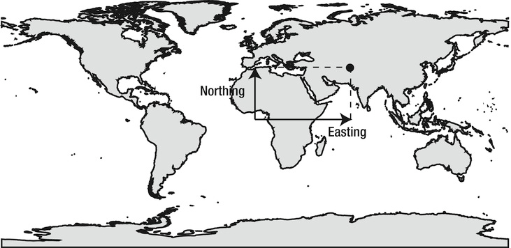
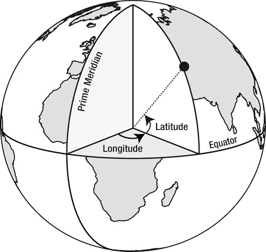
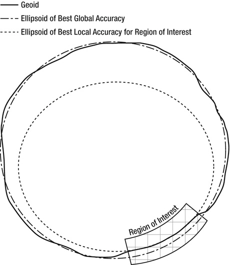
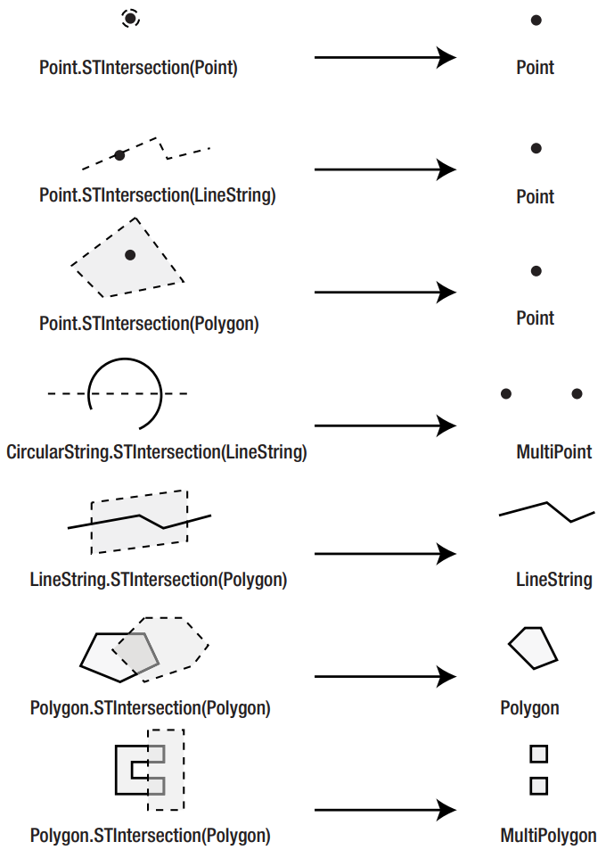
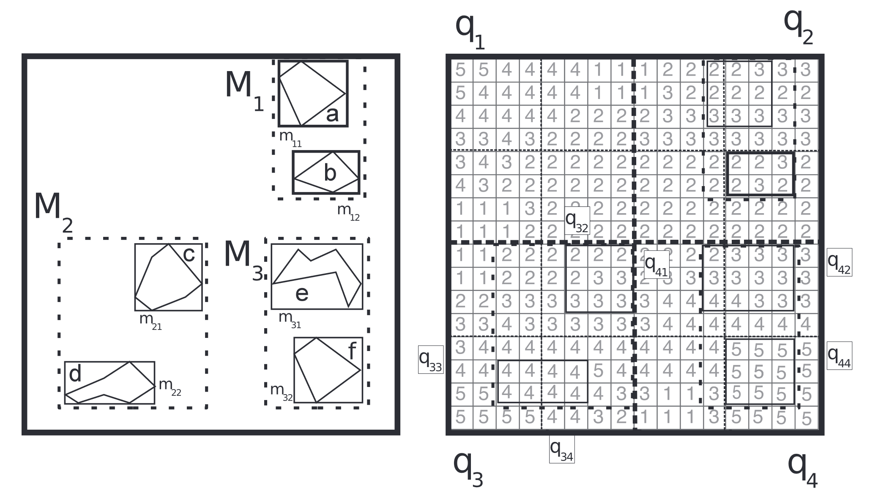

Business Intelligence
Geointelligence
Gliederung
Geointelligence
- Einführung
- Problemdarstellung
- Anwendungsfälle
- Koordinatensysteme
- Standardisierung
- Objekte
- Methoden
- Datenformate
- Technologien
- Datenmodellierung
- Datenquellen
Einordnung

Einführung
- Räumliche (Spatial) Daten bieten häufig Mehrwert für Datenauswertungen
- Wetterdaten
- Kartenmaterial
- Demografie
- Bewegungsdaten
- Herkömmliche (relationale) Datenverarbeitungsmethoden stoßen an Grenzen
Problemdarstellung
Anwendungsfälle
- Darstellung von Informationen mit Raumbezug
- Ergänzung bestehender Datensätze um Daten mit Raumbezug
- Abbildung räumlicher Zusammenhänge als Datensatz
- Navigation
- Tracking

Koordinatensysteme - Projektion der Erdkugel


Koordinatensysteme - Notation von Koordinaten
- Breiten- und Längenkoordinaten sind Winkel und werden normalerweise in Grad angegeben.
- Längenwerte (Longitude), gemessen ab einem willkürlich festgelegten Nullmeridian, reichen von -180° bis +180°.
- Breitenwerte (Latitude), vom Äquator aus gemessen, reichen von -90° (Südpol) bis +90° (Nordpol).
- Längengrade östlich des Nullmeridians werden normalerweise als positive Werte angegeben oder mit dem Buchstaben "E".
- Die Längengrade westlich des Nullmeridians werden als negative Werte angegeben oder mit dem Suffix "W".
- Ebenso werden die Breitengrade nördlich des Äquators als positive Werte oder mit "N" ausgedrückt,
- während die südlich des Äquators gelegenen Breitengrade negativ sind oder mit dem Buchstaben "S" bezeichnet werden.

Koordinatensysteme - Notation von Koordinaten
Es gibt verschiedene Schreibweisen für Koordinaten
- Meistverbreitet ist das DMS-System, auch als Sexagesimalformat bekannt. Jeder Grad wird in 60 Minuten unterteilt. Jede Minute ist wiederum in 60 Sekunden unterteilt: 51°15'32”
- In GPS-Geräten werden häufig die Minuten in dezimaler Form ausgegeben: 51:15.53333333
- In der dezimalen Schreibweise werden einfach die Grade in deziamler Form dargestellt: 51.25888889
Degrees + (Minutes / 60) + (Seconds / 3600) = Decimal Degrees
Koordinatensysteme - Geoid

| Referenzsystem | Einsatzgebiet |
|---|---|
| Airy (1830) | Great Britain |
| Bessel (1841) | Czechoslovakia, Japan, South Korea |
| Clarke (1880) | Africa |
| NAD 27 | North America |
| NAD 83 | North America |
| WGS 84 | Global |
Standardisierung
- Internationale gemeinnützige Organisation.
- Gegründet 1994.
- Legt konsensual allgemeingültige Standards für räumliche Daten und Dienste, GIS-Datenverarbeitung und dem Teilen von Daten fest.
- Setzt sich aus mehr als 370+ kommerziellen, gemeinnützigen, wissenschaftlichen und staatlichen Organisationen weltweit zusammen.
Standardisierung - Klassen
Simple-Feature-Model

Standardisierung
Methoden


Standardisierung - Datenformate
- GDAL/OGR unterstützt 241 Datenformate (Stand 22.04.2023).
- Unterscheidung zwischen raster- und vektorbasierten Datenformaten.

Standardisierung - Datenformate
Geography Markup Language
XML-basierte Auszeichnungssprache
Standardisierung - Datenformate
GeoJSON
Standardisierung - Datenformate
ESRI Shapefile
- Entworfen und gepflegt vom Environmental Systems Research Insitute, Inc. (ESRI)
Technologien
GDAL/OGR Library
- Bibliothek zur Umwandlung verschiedener räumlicher Datenformate
- Bildet die Grundlage vieler Tools zur Geodatenverarbeitung
Technologien - Datenbanken
Technologien - Geodatenverarbeitung
- Programmiersprachen (Python, Java, C#, R, etc.)
- GIS-Software
- BI-Tools (Power BI, Tableau, Qlik, etc.)
- Webservices
Datenmodellierung
Am Beispiel Open Street Map
Datenquellen
- Wetterdaten: Deutscher Wetterdienst
- Kartendaten: Bundesamt für Kartographie und Geodäsie
- Demografiedaten
- Geolocation-Dienste
Literatur
- Bivand, R. S., Applied Spatial Data Analysis with R, Berlin 2008
- Alastair, A., Pro Spatial with SQL Server 2012, London 2012